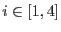

| Name | Description | Unit | Format | Stacked
|
|
|---|---|---|---|---|---|
| Name | Description | Unit | Format | Stacked | |
| 1 | ML_ID_SRC | unique detection number | int. | ||
| 2 | BOX_ID_SRC | corresponding eboxdetect input source number | int. | ||
| 3 | ID_INST | instrument ID. 0: all-EPIC, 1: PN, 2: MOS1, 3: MOS2, preceded by the observation identifier in pointing-summary rows. | int. | ||
| 4 | ID_BAND | energy band number (0: total) | int. | ||
| 5 | ID_CLUSTER | cluster id of detections which have been fit simultaneously | int. | ||
| 6 | SCTS | background-corrected counts under the entire PSF of the detection | cts | real | total |
| 7 | SCTS_ERR | source counts error | cts | real | total |
| 8 | X_IMA | position of the detection in X image direction | image px | real | combined fit |
| 9 | X_IMA_ERR | error of X_IMA, corresponding to a |
image px | real | combined fit |
| 10 | Y_IMA | position of the detection in Y image direction | image px | real | combined fit |
| 11 | Y_IMA_ERR | error of Y_IMA, corresponding to a |
image px | real | combined fit |
| 12 | EXT | extent radius of the detection in image pixels, i.e. gaussian sigma or beta model core radius | image px | real | combined fit |
| 13 | EXT_ERR | statistical error of the extent | image px | real | combined fit |
| 14 | DET_ML | detection likelihood, normalized to two degrees of freedom | real | equiv. likelihood | |
| 15 | EXT_ML | likelihood of the detection to be extented | real | combined fit | |
| 16 | BG_MAP | background at the position of the detection | cts/px | real | total |
| 17 | EXP_MAP | vignetting corrected exposure of the detection: PSF-weighted mean of the subimages (radius CUTRAD) around the detection | s | real | total |
| 18 | FLUX | flux under the entire PSF of the detection | erg/cm |
real | weighted sum |
| 19 | FLUX_ERR | statistical error of the flux | erg/cm |
real | weighted error |
| 20 | RATE | count rate under the entire PSF of the detection, corrected for background, vignetting, detector efficiency and gaps | cts/s | real | total |
| 21 | RATE_ERR | statistical error of the count rate | cts/s | real | total |
| 22 | RA | right ascension of the detection | degrees | dble. | combined fit |
| 23 | DEC | declination of the detectino | degrees | dble. | combined fit |
| 24 | RADEC_ERR | combined R.A.-Dec. statistical error ( = ) | arcsec | real | combined fit |
| 25 | LII | galactic longitude of the detection | degrees | dble. | combined fit |
| 26 | BII | galactic latitude of the detection | degrees | dble. | combined fit |
| 27 | RAWX | raw-X coordinate of the detection | px | int. | per image only |
| 28 | RAWY | raw-Y coordinate of the detection | px | int. | per image only |
| 29 | OFFAX | off-axis angle | arcmin | real | per image only |
| 30 | CCDNR | chip number | int. | per image only | |
| 31, | HRi | hardness ratio of count rates: | real | derived from the | |
| 33, 35, 37 | () | HR(band m , band n) =
(rate(n) |
total rates | ||
| 32, | HRi_ERR | statistical error of HRi | real | of HRi | |
| 34, 36, 38 | () | ||||
| 39 | CUTRAD | source cut out radius | image px | real | combined fit |
| 40 | MASKFRAC | PSF weighted on-chip fraction | real | max. of minima | |
| 41 | EEF | encircled energy fraction | real | combined fit | |
| 42 | VIGNETTING | Vignetting as function of off-axis angle and energy; only valid in the intermediate emldetect source list. | real | NULL | |
| 43 | ONTIME | Integration time of the CCD, not vignetting corrected. NULL, if CCD no. is not defined (i.e. source center on bad pixels, gaps, damaged CCDs) | s | real | total |
| 44 | DIST_NN | distance to nearest neighbour | arcsec | real | combined fit |
| 45 | FLAG | quality flag placeholder (to be set by dpssflag) | char. | - |